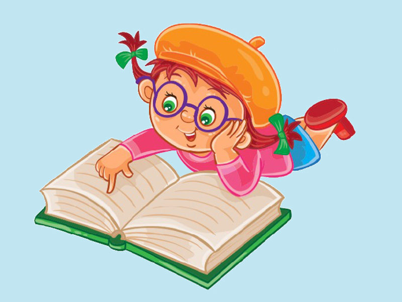

Kitap Okumayı cok sevenlerin vazgeçemeyeceği tek adres.
Çok okumalıyız, başka çaremiz yok. İster kitap, ister gazete, ister dergi; ister basılı, ister dijital… Daha çok okumalıyız. Birbirimizi okuma konusunda teşvik etmeliyiz. Tek başına okuyamıyorsak bir okuma grubuna dahil olmalıyız. Okumayı seven insanlarla arkadaşlık kurmalıyız. Çevremizi kitap okumayı sevenlerle doldurmalıyız. Hiç yoksa bile, kitap tavsiyesi alabileceğimiz, kitap okumayı seven en azından birkaç dost edinmeliyiz. Vaktimizi okumaya ayırmalıyız. Döne döne, yana yana okumalıyız. Okuya okuya yaşamalıyız. Okumanın faydalarını saymakla bitiremeyiz. Okuma alışkanlığı olan insanlar daha üretken, daha mutlu, daha başarılı, daha mantıklıdır. Okuma kültürü olan toplumlar daha ileri, daha demokratik, daha medenidir. Okuma oranı yüksek olan ülkeler daha güçlü, daha zengin, daha saygındır. “İnsanlar kötüydü, kitaplara sığındım” der Cemil Meriç. Kitaptan iyi dost yoktur: Sizi yargılamaz, suçlamaz. Kitabın kötüsü olmaz. Kitap kötülük yapmaz. Kitap nazlanmaz, zahmetsizdir. Kitap okuyan kötülük yapamaz. Kitap iyiliğe sevk eder insanı. Kitap dokunduğu her şeyi güzelleştirir.
